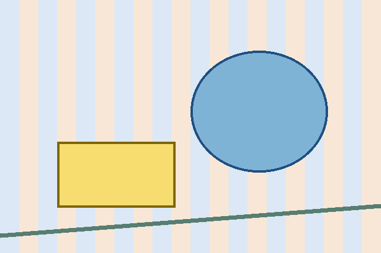
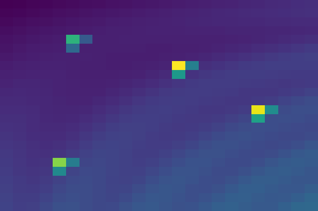

B1
VG raw attention and JVLens patch blocks
q_type-aligned image-aspect 24x24 token grid, independent patch blocks, no interpolation, viridis per-map minmax. Fixture tokens are synthetic and marked in JSON.

B1
| rank | patch | row,col | raw | norm | JLens top tokens | logit-lens top tokens |
|---|---|---|---|---|---|---|
| 1 | 181 | 7,13 | 3.3783715 | 1 | fixture_jlens_181_1, fixture_jlens_181_2, fixture_jlens_181_3, fixture_jlens_181_4, fixture_jlens_181_5, fixture_jlens_181_6, fixture_jlens_181_7, fixture_jlens_181_8, fixture_jlens_181_9, fixture_jlens_181_10 | fixture_logit_181_1, fixture_logit_181_2, fixture_logit_181_3, fixture_logit_181_4, fixture_logit_181_5, fixture_logit_181_6, fixture_logit_181_7, fixture_logit_181_8, fixture_logit_181_9, fixture_logit_181_10 |
| 2 | 307 | 12,19 | 3.2725031 | 0.96856612 | fixture_jlens_307_1, fixture_jlens_307_2, fixture_jlens_307_3, fixture_jlens_307_4, fixture_jlens_307_5, fixture_jlens_307_6, fixture_jlens_307_7, fixture_jlens_307_8, fixture_jlens_307_9, fixture_jlens_307_10 | fixture_logit_307_1, fixture_logit_307_2, fixture_logit_307_3, fixture_logit_307_4, fixture_logit_307_5, fixture_logit_307_6, fixture_logit_307_7, fixture_logit_307_8, fixture_logit_307_9, fixture_logit_307_10 |
| 3 | 436 | 18,4 | 2.7696056 | 0.81924826 | fixture_jlens_436_1, fixture_jlens_436_2, fixture_jlens_436_3, fixture_jlens_436_4, fixture_jlens_436_5, fixture_jlens_436_6, fixture_jlens_436_7, fixture_jlens_436_8, fixture_jlens_436_9, fixture_jlens_436_10 | fixture_logit_436_1, fixture_logit_436_2, fixture_logit_436_3, fixture_logit_436_4, fixture_logit_436_5, fixture_logit_436_6, fixture_logit_436_7, fixture_logit_436_8, fixture_logit_436_9, fixture_logit_436_10 |
| 4 | 101 | 4,5 | 2.1838691 | 0.64533424 | fixture_jlens_101_1, fixture_jlens_101_2, fixture_jlens_101_3, fixture_jlens_101_4, fixture_jlens_101_5, fixture_jlens_101_6, fixture_jlens_101_7, fixture_jlens_101_8, fixture_jlens_101_9, fixture_jlens_101_10 | fixture_logit_101_1, fixture_logit_101_2, fixture_logit_101_3, fixture_logit_101_4, fixture_logit_101_5, fixture_logit_101_6, fixture_logit_101_7, fixture_logit_101_8, fixture_logit_101_9, fixture_logit_101_10 |
| 5 | 331 | 13,19 | 1.9417602 | 0.57344848 | fixture_jlens_331_1, fixture_jlens_331_2, fixture_jlens_331_3, fixture_jlens_331_4, fixture_jlens_331_5, fixture_jlens_331_6, fixture_jlens_331_7, fixture_jlens_331_8, fixture_jlens_331_9, fixture_jlens_331_10 | fixture_logit_331_1, fixture_logit_331_2, fixture_logit_331_3, fixture_logit_331_4, fixture_logit_331_5, fixture_logit_331_6, fixture_logit_331_7, fixture_logit_331_8, fixture_logit_331_9, fixture_logit_331_10 |
| 6 | 205 | 8,13 | 1.8092149 | 0.5340938 | fixture_jlens_205_1, fixture_jlens_205_2, fixture_jlens_205_3, fixture_jlens_205_4, fixture_jlens_205_5, fixture_jlens_205_6, fixture_jlens_205_7, fixture_jlens_205_8, fixture_jlens_205_9, fixture_jlens_205_10 | fixture_logit_205_1, fixture_logit_205_2, fixture_logit_205_3, fixture_logit_205_4, fixture_logit_205_5, fixture_logit_205_6, fixture_logit_205_7, fixture_logit_205_8, fixture_logit_205_9, fixture_logit_205_10 |
| 7 | 308 | 12,20 | 1.6436135 | 0.4849242 | fixture_jlens_308_1, fixture_jlens_308_2, fixture_jlens_308_3, fixture_jlens_308_4, fixture_jlens_308_5, fixture_jlens_308_6, fixture_jlens_308_7, fixture_jlens_308_8, fixture_jlens_308_9, fixture_jlens_308_10 | fixture_logit_308_1, fixture_logit_308_2, fixture_logit_308_3, fixture_logit_308_4, fixture_logit_308_5, fixture_logit_308_6, fixture_logit_308_7, fixture_logit_308_8, fixture_logit_308_9, fixture_logit_308_10 |
| 8 | 460 | 19,4 | 1.6124022 | 0.47565711 | fixture_jlens_460_1, fixture_jlens_460_2, fixture_jlens_460_3, fixture_jlens_460_4, fixture_jlens_460_5, fixture_jlens_460_6, fixture_jlens_460_7, fixture_jlens_460_8, fixture_jlens_460_9, fixture_jlens_460_10 | fixture_logit_460_1, fixture_logit_460_2, fixture_logit_460_3, fixture_logit_460_4, fixture_logit_460_5, fixture_logit_460_6, fixture_logit_460_7, fixture_logit_460_8, fixture_logit_460_9, fixture_logit_460_10 |
| 9 | 182 | 7,14 | 1.4690602 | 0.43309668 | fixture_jlens_182_1, fixture_jlens_182_2, fixture_jlens_182_3, fixture_jlens_182_4, fixture_jlens_182_5, fixture_jlens_182_6, fixture_jlens_182_7, fixture_jlens_182_8, fixture_jlens_182_9, fixture_jlens_182_10 | fixture_logit_182_1, fixture_logit_182_2, fixture_logit_182_3, fixture_logit_182_4, fixture_logit_182_5, fixture_logit_182_6, fixture_logit_182_7, fixture_logit_182_8, fixture_logit_182_9, fixture_logit_182_10 |
| 10 | 437 | 18,5 | 1.4205834 | 0.4187032 | fixture_jlens_437_1, fixture_jlens_437_2, fixture_jlens_437_3, fixture_jlens_437_4, fixture_jlens_437_5, fixture_jlens_437_6, fixture_jlens_437_7, fixture_jlens_437_8, fixture_jlens_437_9, fixture_jlens_437_10 | fixture_logit_437_1, fixture_logit_437_2, fixture_logit_437_3, fixture_logit_437_4, fixture_logit_437_5, fixture_logit_437_6, fixture_logit_437_7, fixture_logit_437_8, fixture_logit_437_9, fixture_logit_437_10 |